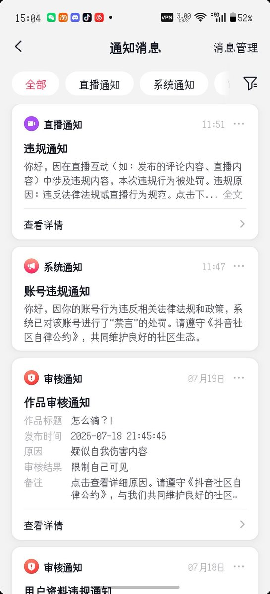

櫻川由奈🏳️⚧️Sakura🍥
@Xiaoyi_0324
我发现 我推特的fo最近一直在1834-1837之间浮动 不知道是有人取关我还是一群人在被封 总之很难让人绷住
另外我的抖音在1200fo的时候被字节Block了 什么都干不了 我做错了什么？我不就是分享我的hrt日常吗 字节至于这么严重的封禁我？
不让挂🏳️⚧️就算了 怎么还搞区别对待
至于我怎么知道的 我有一个小号 账号状态和这个号差不多 只不过注册稍早一些 也没有实名 那个账号现在依然活得好好的 就把我这个跨性别的号封掉了
目的是什么 好难猜啊 对吧
